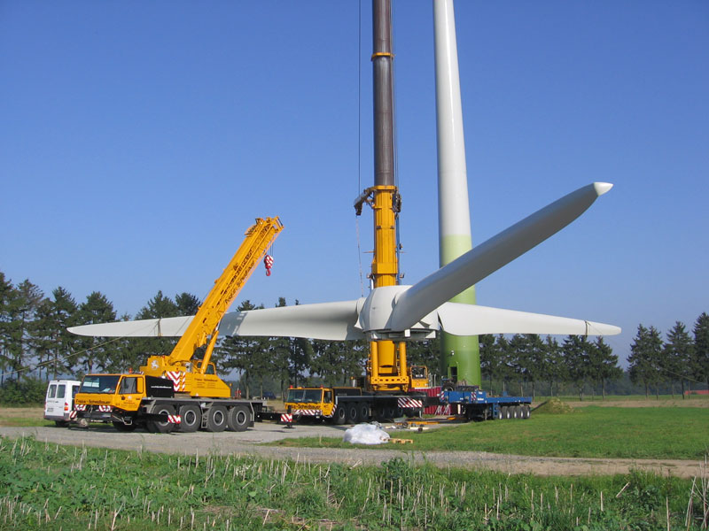
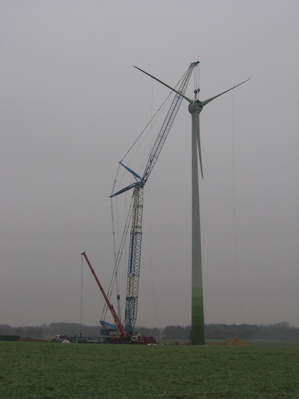

Projektübersicht
{kind=link}
Der Schwerpunkt unserer Tätigkeit lag und liegt in der Entwicklung und Realisierung von schlüsselfertigen Windenergieprojekten.
Neben der Projektentwicklung und –realisierung ist Windconcept auch als Konsultant tätig. Für verschiedene Investoren haben wir deren Projektentwicklung fachlich begleitet und Standorte und Projekte evaluiert.
Realisierte Windenergieprojekte
| Projektname | Standort | Bundesland | Inbetriebnahme (Jahr) | Anzahl WEA | Gesamtleistung (MW) |
|---|---|---|---|---|---|
| WEA Wessel | Lübbecke | NRW | 2000 | 1 | 0,6 |
| WP FraWi Energiefonds | Espelkamp | NRW | 2000 | 2 | 1,2 |
| WEA Lömker | Lübbecke | NRW | 2001 | 1 | 1,5 |
| WP Energy Farming Development | Espelkamp | NRW | 2002 | 2 | 3 |
| WEA Isenstedt I | Espelkamp | NRW | 2002 | 1 | 1,5 |
| WEA Isenstedt II | Espelkamp | NRW | 2003 | 1 | 0,6 |
| WEA Muckum | Bünde | NRW | 2005 | 1 | 0,8 |
| WP Mehlbergen | Marklohe | NDS | 2006 | 2 | 1,4 |
| WP Mehlbergen | Marklohe | NDS | 2006 | 3 | 2,4 |
Windenergieprojekte im Bau
| Projektname | Standort | Bundesland | Inbetriebnahme geplant (Jahr) | Anzahl WEA | Gesamtleistung (MW) |
|---|---|---|---|---|---|
| WP Niederheide | Pr. Oldendorf | NRW | 2014 | 5 | 15 |
Windenergieprojekte in Planung
| Projektname | Standort | Bundesland | Inbetriebnahme geplant (Jahr) | Anzahl WEA | Gesamtleistung (MW) |
|---|---|---|---|---|---|
| WP Bardüttingdorf | Spenge | NRW | 2015 | 1 | 2,4 |
| WP Rahden | Rahden | NRW | 2015 | 6 | 15 |
| WP Finks Moor | Espelkamp | NRW | 2015 | 3 | 7,5 |

{kind=link}
Projekt-Evaluation
- Hille Wind GbR, 1998
- Botag, Berlin, 2003
- INE, Paderborn, 2003
- Gehrke & Stienkemeier, Hüllhorst und Bautzen, 2003 bis 2006
- Berninghof, Spenge, 2006 bis 2007